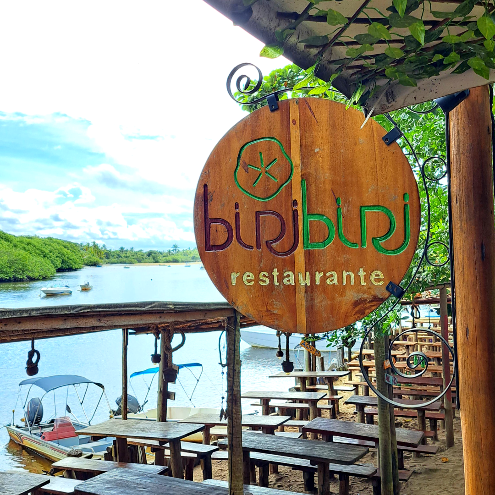
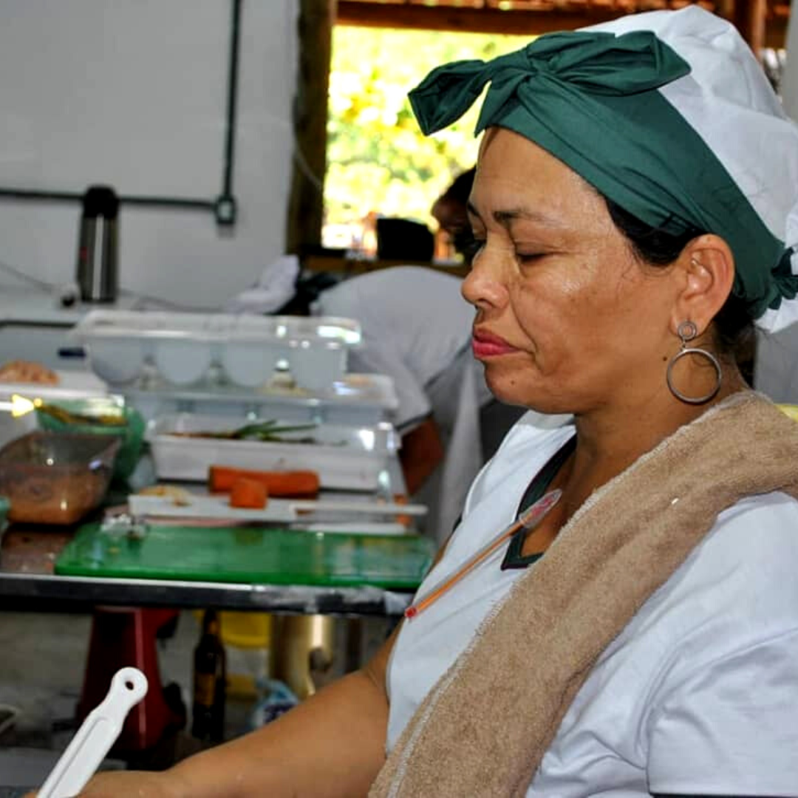

Chef. Simone Rocha
Nascida e criada em Arraial Dajuda, filha de Joao Branco e Dona Aldina, e a filha mais velha de 15 filhos. Hoje, casada, com 3 filhos, nossa chef se mudou em 2019 para a vila de Caraíva para realizar o seu sonho: se descobrir como mulher. Com notoriedade e valor no local, ela comanda o Restaurante Biribiri.
E o nome Biribiri foi uma homenagem
a minha base familiar 💚
Trecho da entrevista para o Canal Travel Box Brazil
Sobre...
O Restaurante Biribiri, sob o comando da Chef Simone 👩🏻🍳, fica localizado aqui na beira do Rio Caraíva e teve sua abertura em 2019. Estamos entre os 10 melhores Restaurantes 💚 de Caraíva, pelo TripAdvisor, participamos recentemente do Festival de Cinema de Trancoso 🎬 e recebemos o certificado do Guia Garfo de Ouro 2022 🍴
Funcionamos todos os dias
de 12h as 22h
